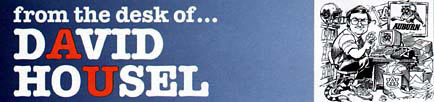

A successful athletics program has to do four things: win, educate its student athletes, pay its bills and abide by the rules. Paying the Bills There are two points that must be made in any discussion of athletics financing at Auburn: (1) Auburn's athletic program does not get one red cent from the state of Alabama. Not one red cent, and that's the way it should be. The taxpayer's hard earned tax dollars should be used for educational purposes, not to support athletic programs which, even at their highest and finest, are still extra-curricula activities of colleges and universities. The Auburn Athletics Department must generate every penny it spends, and we have no problem with that. That's the way it should be. (2) The ability to pay your bills allows an athletic program to prosper, grow and succeed. If an athletic department can't pay its bills, it matters not whether its number one priority is to educate its student athletes or to win. It can do neither. Auburn's number one fiscal priority over the next 10 years must be the reduction of debt and debt service. At the start of each fiscal year, the Department of Athletics must clear $3.5 million just to handle debt services on a total debt of $28 million. Current projections call for this debt, which covers construction of both stadium upper decks and the Athletic Complex, to be paid off in the year 2010. From an income standpoint, Auburn's athletics program ranks as one of the most successful in the nation with annual revenues of approximately $33 million, but debt and debt service has limited Auburn's ability to grow and expand in other areas. It is becoming increasingly difficult for Auburn to keep pace with improvements made at other institutions which do not have this level of debt. If the $3.5 million spent every year on debt service could be spent on facility and program enhancement, Auburn's athletics program would be second to none. This is not to suggest that Auburn's program is in financial difficulty or that decisions made in the past have been poor decisions. It is to say, however, that the Department of Athletics is at or is approaching its reasonable limit in debt service. Decisions made in the future will have to be made with debt service in mind. It would be hypocritical of Auburn's leadership to criticize the spending habits of the federal government if we ourselves tax the ability of our children and grandchildren to compete for championships on an equal financial plane with other institutions in years to come. If, for example, the decision is made to enlarge Jordan-Hare Stadium within the next 5-10 years, creative means of financing that enlargement must be found. To finance an addition in the usual manner - bonds paid off with gate receipts - would increase debt service to an unacceptable degree, a degree that would inhibit Auburn's ability to field a competitive program. We must continue to find and develop new streams of revenue. Increased private support is critical to our future. Ticket prices and priority donation levels may continue to rise, but we must be careful that we do not price the average family out of the Auburn football business. The business of Auburn Football is much like the business of running your home. If food prices go up five percent, our budget goes up $75,000. If tuition and other college costs go up five percent, our costs go up $250,000. It is a never ending cycle with us as it is with you. If a five percent raise is given to University employees, our salaries increase $205,000 and that doesn't include coaches whose pay increases are performance based. In any given year, membership in the Southeastern Conference is Auburn's best buy. For a $50 membership fee, Auburn received $6 million from the SEC last year. Ticket sales accounted for $11.8 million or 36 percent of our budget, priority contributions, $9.4 million or 29 percent. Any discussion of finances at the Auburn Athletic Department has to include words of thanks and praise to Terry Windle, Senior Associate Athletic Director and Chief Financial Officer. When Terry came to Auburn in 1990, there was no reserve and the department was operating on a razor thin budget. Razor thin. Now the department has a minimum reserve of more than $6 million. University policy, as mandated by the Board of Trustees, requires the Athletic Department to have, at a minimum, twice its annual debt service in reserve. It was a wise decision and has contributed greatly to our ability to compete today. Terry Windle has helped make that possible. Making the dollars fit and counting out the change is not always easy, but it is critical, critical to our ability to compete now and in the future. Next Week: Abiding by the Rules © 1999 Auburn Network, Inc. |